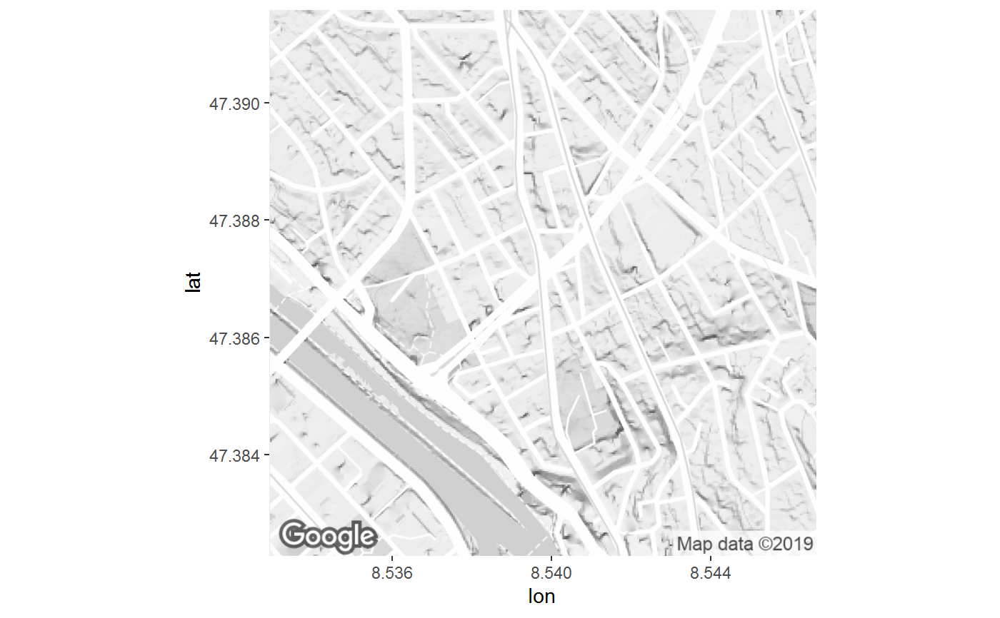

The functions get_googlemap() and get_stamen_map() tries to harmonize the calls to ggmap(). The objective is
to get interchangeable functions with sensible defaults. For example automatic calculation of the zoom. The function
bbox_lv95() generates a bbox object compatible with both functions. Before using this function you need to register
your google API key with ggmap::register_google(). For details consult the documentation of the
Maps Static API and ggmap::get_googlemap().
get_google_map(
bbox,
width = 640,
zoom = "auto",
scale = 2,
language = "de-CH",
color = "bw",
style = c(feature = "all", element = "labels", visibility = "off"),
...
)list with item center = (lon, lat) as WSG84 coordinates. Additional width in meters if zoom = "auto".
Use bbox_lv95() to create a compatible bounding box list
of resulting map in pixels. Is divided trough scale to calculate size.
of tile map as Integer or "auto"
affects the size of labels. ggmap::get_googlemap() multiplies the size with this factor.
character string providing language of map labels (for themes with them) in the format "en-EN". not all languages are supported; for those which aren't the default language is used.
color or black-and-white. Changed default to "bw"
character string or named vector to style the map. This is a powerful and complex specification. See Styled Maps in the documentation of the google maps platform
forwarded to ggmap::get_googlemap()
a ggmap object (a classed raster object with a bounding box attribute)
library(ggmap)
#> Google's Terms of Service: https://cloud.google.com/maps-platform/terms/.
#> Please cite ggmap if you use it! See citation("ggmap") for details.
ggmap::register_google(Sys.getenv("GGMAP_GOOGLE_API_KEY"))
bb <- bbox_lv95(2683141, 1249040, 500) # site Zch_Stamfenbachstrasse
#> Warning: Discarded datum CH1903+ in Proj4 definition
get_google_map(bb) %>% ggmap::ggmap()
#> Source : https://maps.googleapis.com/maps/api/staticmap?center=47.386943,8.53975&zoom=15&size=320x320&scale=2&maptype=terrain&language=de-CH&style=feature:all%7Celement:labels%7Cvisibility:off&key=xxx
